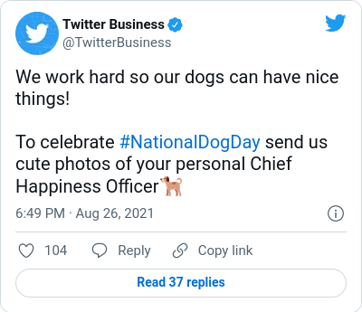
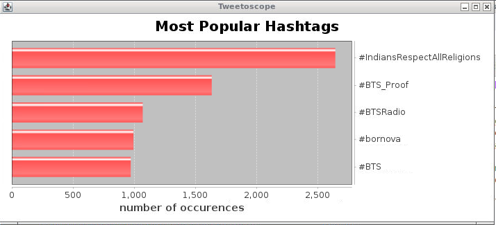
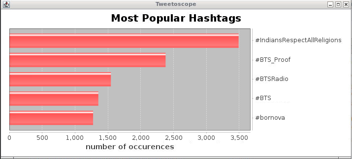
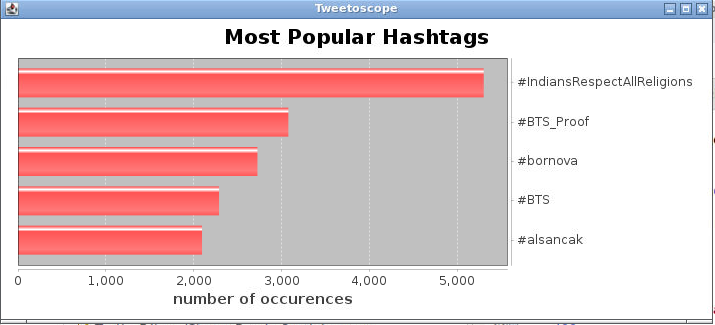
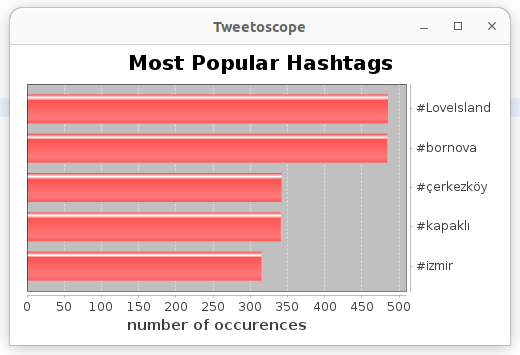

This project aims to assess your ability to implement the different concepts and technologies presented in the course. The chosen application computes statistics from data from the Twitter API. This document explains in detail the work to be done. To help you get the most out of this project, we have listed the different tasks with the course milestone from which you can complete the task: don't wait until the last minute and start now!
Important note: Due to changes in the Twitter API access plans policy on April 2023, the "Free" plan no longer provides read access to user profiles and tweets. For that reason, you will work with a set of pre-recorded tweets. Yet the code used the previous year is still available, in case you're willing to pay for a more elevated access plan, but it is marked as deprecated as we could not re-test it.
Tweets can include hashtags in their text.
Example:

The Git repository contains a Java application that gets or generates Tweets, filters them out based on detected language (for instance), extracts the hashtags, counts how many times each hashtag appears in all the streamed Tweets, and displays the 5 most popular ones, sorted by the number of occurrences; the so-called "leader board" is updated in real-time.
|  |  |  |
The application is already structured in components that implement the observer pattern to communicate. But it is not designed to handle a high volume of Tweets (when connecting to the "real" Twitter API the previous year, it only treated about 1% of Twitter public traffic, which was between 2000 and 4000 Tweets per minute), and it is not fault-tolerant.
Your objective is to refactor the application to overcome these limitations. Your solution must use Kafka, and exploit a Kubernetes cluster for its execution. In addition, you must also demonstrate your GitLab CI/CD skills with this project.
Read this document thoroughly and completely.
Form a group with 2 fellow students using the Edunao interface. 3 students per group, to be done by October 9th.
Create a project on GitLab-student (not on GitHub, nor Gitlab.com!).
The name of the project must be Tweetoscope23_GROUP-X_NAME1_NAME2_NAME3 (of course, replace "X" with your group number, and "NAMEi" with your names...).
Add Michel Ianotto and Virginie Galtier as members, with the "Developer" role.
Create the skeleton of a LaTeX document that will be your report. A title and your names will be enough for now:
You can use texmaker, installed in the image, to edit your LaTeX sources and generate a PDF document; it is important for later tasks that you know the command lines to compile your source file(s) into a PDF document yourself (pdflatex report.tex for instance). You can use the evince application to display a PDF document.
If you're not familiar with LaTeX yet, now is a good time to start learning LaTeX.
Add the LaTeX source file(s) to your Git (do not add the PDF file as it is generated from the .tex file, and you'll learn later how to publish it automatically).
Study and run the provided source code.
The starting point of the execution (main method) is in the TweetoscopeApp class.
It starts by reading the program arguments:
random: a continuous stream of random crafted Tweets (doesn't require connecting to the Twitter API)scenario: a predefined set of crafted Tweets (doesn't require connecting to the Twitter API)filtered: connects to the Twitter search stream endpoint and retrieves Tweets with given keywordssampled: connect to the Twitter sampled stream endpoint that delivers a roughly 1% random sample of publicly available Tweets in real-timenone: all Tweets are consideredlanguage: only Tweets where the detected language is "en" are consideredcountry: only Tweets where the place is set to somewhere in "us" are considereduserAccountCreationData: only Tweets posted by users who created their account before a given year ar consideredThe next section of the main method creates the different components of the application.
The first component tweetsProducer is a component that generates or reads Tweets and injects them into the application. There are 4 possible producers, depending on the arguments of the program:
All producers implement the java.util.concurrent.Flow.Publisher interface. Warning: "Publisher" is quite a common name; note that this interface is not part of the Kafka library.
To avoid launching multiple instances of the TwitterSampledStreamReader (for instance) by mistake (it will lead to incorrect results as the same Tweets might be produced twice for instance), all the OnlineTweetsProducers follow the singleton pattern.
The OnlineTweetsProducers start by checking if an environment variable named BEARER_TOKEN exists.
There are multiple ways to make that happen:
export BEARER_TOKEN=YOURKEYHERE and then launch Eclipse from the same shell windowThe next component is the filter. It subscribes to the publisher and when a new Tweet arrives, it examines it and decides to ignore it silently, or to propagate it down the application stream (as it also implements the Publisher interface). 3 filters are defined so far as explained above:
FILTER_NONE: forwards all the Tweets downstreamFILTER_LANGUAGE: if Twitter detects the language of the Tweet, it is indicated in the lang property as a BCP47 language tag. This filter selects the Tweet where the value for this tag is "en".FILTER_COUNTRY: selects the Tweets where the value for the place/countryCode property is "us" (note: getting the country code from a Tweet requires an additional request for the placeId property).The next component HashtagExtractor subscribes to the TweetFilter and is in charge of extracting hashtags from Tweets (in fact that functionality is provided by the com.twitter.twittertext.Extractor class) and publishing them for downstream processing.
The next component HashtagCounter subscribes to the hashtags published by the HashtagExtractor and maintains a list of <hashtag string, number of occurences> Each time a hashtag is received, the list is updated, then sorted by number of occurrences, and the top elements are extracted. If the top elements change from the previous update, the new top list is published.
The last component is the Visualizor wich subscribes to the list published by the HashtagCounter and displays it as a bar histogram.
Add the code to your Git repo.
When you subscribe to get access to the Twitter API, you are provided with a token or key. This string of characters must then be embedded in all requests you send to the Twitter server; it is used to authenticate your application and determine whether it is allowed to get the requested service (based on the chosen access plan and considering a limit on the number of requests made during the last day or month). Is it a good idea to save your token or key into the Git repo? Investigate and write a synthesis about your findings and thoughts in your report in a section entitled "Secrets and Git".
When requesting the "real" Twitter API, each execution leads to different results since the Twitter live stream is unpredictable. For testing purposes (and because we have no other free option this year), it is convenient to feed the application with a pre-recorded set of Tweets. That's what the MockTwitterStreamScenario class is for.
TweetFilter receives Tweets #001 to #010TweetFilter was set to FILTER_LANGUAGE, the HashtagExtractor receives Tweets #003 to #010HashtagCounter receives "Failure, success, work, work, Failure, success, success, work"Visualizor receives
Even with a paid access plan, there are some limitations on the kind and number of queries you can make to the Twitter API. Working with a pre-recorded set of Tweets instead of with the live stream is therefore useful before the code is ready for production.
3 test bases are given:
MockTwitterStreamScenario class.Write a MockTwitterStreamRecorded class that reads and publishes the content of one of these files. Remember to push your code to Git.
Run the application with the largeTestBase read by your method. Results should be:

Create a new Tweet filter (for instance, only keep recent Tweets) and test it with the miniTestBase or a modified version of the miniTestBase more suited to your custom filter.
Design the architecture of your solution: services (various Kafka producers and consumers), number of topics and partitions, structure of the exchanged messages, how messages are assigned to a partition, etc.
Document (and explain) your architectural choices in your report in a section entitled "Architectural Choices".
In a "Risk Analysis / Initial Risk Analysis" section/subsection indicate what would be the impact of the failure of each component on the application: it will cause the application to crash, to hang, it will cause the application to display erroneous results, it will only slow down the application, etc.
Don't forget to push to your Git.
Implement your refactored architecture.
Use the console consumer and the miniTestBase file to ensure each Kafka producer outputs the right messages.
Make sure your solution also works when distributed across multiple machines.
Push to Git.
Check experimentally that the behavior of your application in case of failure is consistent with the risk assessment analysis performed in Task 8.
Contenairize each of your services.
Run the application locally, using images stored locally, and starting each container manually.
Then upload your images to Dockerhub and rerun the application using the remote images.
Write a docker-compose file to automate the launch of the different components.
Deploy your application on Minikube.
Deploy your application on the InterCell Kubernetes cluster.
Assess its fault tolerance. Add a "risk mitigation using Kubernetes" section to your report.
Set up a CI pipeline for your project so that the latex sources are automatically compiled into a PDF file, and the PDF file is published to the "pages" of your project. Update the README.md file with a link to the PDF file.
Write a Junit test for the filter created in Task 7 and integrate the test into your pipeline.
Integrate the build of the Docker images to your pipeline.
Change your Kubernetes deployment files to use the Docker images from your Git container registry instead of Dockerhub.
Set up a process to check your code quality.
Incorporate to the CI/CD.
Shoot a screen-shot video where you demonstrate:
Make sure your video's resolution is good enough to read the commands and code you show, and the sound is loud enough.
DO NOT put your video on Gitlab, nor send it by email. Instead post it somewhere else and add a link to it in your report and README.md file (if you use filesender, make sure to set the expiration date as far as possible).
Complete your report to indicate:
{kind=link}